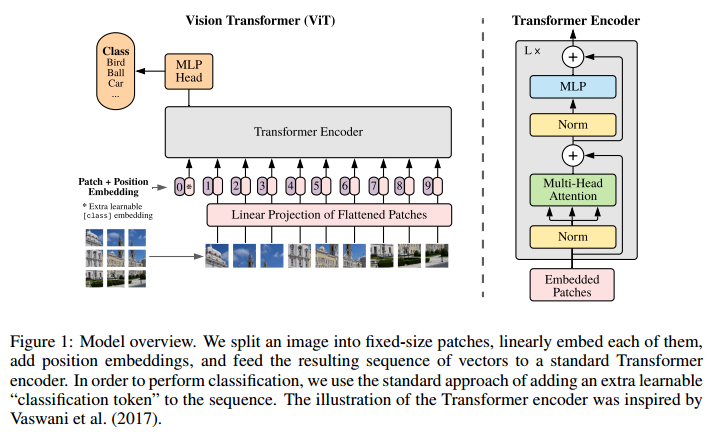
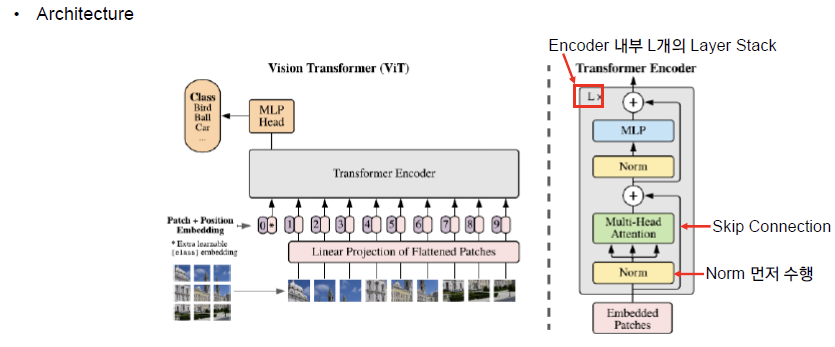
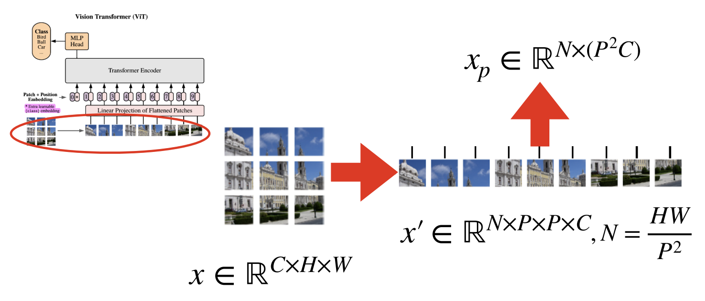
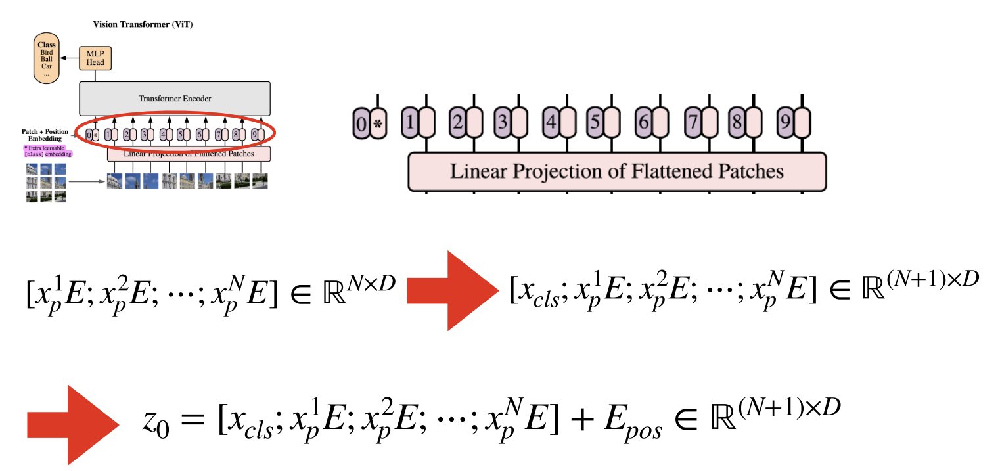
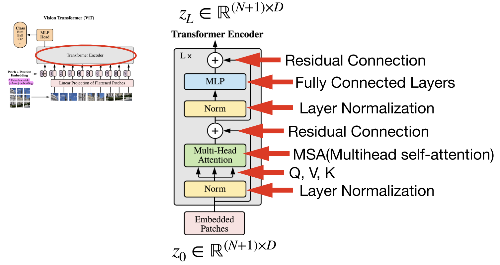
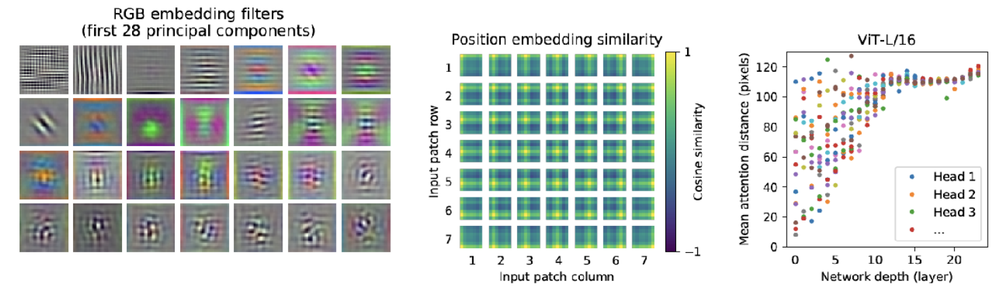

- 참조
- ViT란 무엇인가?
- ViT의 특징
- ViT Inference 과정
- Class Token이 있는 이유는?
- Layer Normalization
- ViT의 결과
- Pytorch를 이용한 ViT 구현
참조
https://arxiv.org/abs/2010.11929
https://visionhong.tistory.com/25
https://deep-learning-study.tistory.com/716
https://jalammar.github.io/illustrated-transformer/
https://daebaq27.tistory.com/108
https://gaussian37.github.io/dl-concept-vit/
https://datascience.stackexchange.com/questions/90649/class-token-in-vit-and-bert
https://learnopencv.com/the-future-of-image-recognition-is-here-pytorch-vision-transformer/
ViT란 무엇인가?
Transformer를 image patch의 sequence에 적용하여 classification을 수행하는 모델입니다.
ViT는 일반적인 CNN과 다르게 공간에 대한, “Inductive bias”이 없습니다. 따라서 더 많은 데이터를 통해, 원초적인 관계를 Robust 하게 학습시켜야 하기 때문에 매우 많은 데이터가 필요합니다.

Vision Transformer는 Transformer의 전체 아키텍쳐를 크게 변경하지 않은 상태에서 이미지 처리를 위한 용도로 사용되는데 의의가 있습니다.- 기존의 이미지 분야에서
attention기법을 사용할 경우 대부분 CNN과 함께 사용되거나 전체 CNN 구조를 유지하면서 CNN의 특정 구성 요소를 대체하는 데 사용되어 왔습니다. - 또는
attention만을 이용한 모델도 있었지만 기존의 CNN을 기반으로 하는 모델의 성능을 넘지는 못하였습니다. - 하지만
Vision Transformer에서는 CNN에 의존하지 않고이미지 패치의 시퀀스를 입력값으로 사용하는 transformer를 적용하여 CNN 기반의 모델의 성능을 넘는 성능을 보여주었습니다. 이미지를 이미지 패치의 시퀀스로 입력하는 방법은 뒤에서 다루겠습니다.
ViT의 특징
- 매우 많은 데이터가 필요합니다. ImageNet와 같은 Mid-sized 데이터셋으로 학습 시, ResNet보다 낮은 성능을 보입니다.
- ViT는 이미지를 patch로 분할하고, 이 patch들을 linear embedding에 전달합니다. 그리고 이것을 transformer의 입력값으로 사용합니다. 즉, 하나 하나의 patch를 NLP의 token으로 간주합니다.
- Embedding은 NLP의 transformer와 동일하게 learnable positional embedding과 element-wise sum으로 결합된 embedding을 사용하며 0번째 patch + position embedding에는 class를 부여합니다. 그리고 이것을 patch embedding이라고 부릅니다.
- Transformer encoder 출력값에 하나의 hidden layer를 가진 MLP를 사용하여 pre-train 합니다. pine-tunning 시에는 랜덤 초기화된 하나의 linear layer를 사용합니다.
ViT Inference 과정

-
==Before Input==

- (C,H,W) 크기의 이미지를 크기가 (P,P)인 패치 N개로 자른 후, N개의 1-D 벡터 (P^2⋅c차원)로 flatten
- N=HW/P^2로 계산되며, P는 하이퍼 파라미터.
- 예시는 참고용이며, 실제 실험에서는 모델 크기에 따라 P=14,16,32 등 다양
- 이후, Linear projection을 수행하여 크기가 D인 벡터의 시퀀스로 차원 변경
- 이때, D는 모든 레이어 전체에 고정된 값.
-
==Linear Projection==
- xp 를 Embedding 하기 위하여 행렬 E 와 곱 연산 수행
- E 의 shape : (P^2 x C, D)
- D : Embedding dimension, P^2 x C 크기의 벡터를 D 로 변경하겠다는 의미
-
- xp shape : ( N,P^2 x C )
- E shape : ( P^2 x C,D )
- xp 를 Embedding 하기 위하여 행렬 E 와 곱 연산 수행
-
==Embedding (P=16, H=W=224, N=196, D=768)==

- Class token 추가
- 가장 첫번째 패치 임베딩 앞에 학습 가능한 임베딩 벡터를 추가
- 추후 이미지 전체에 대한 표현을 나타내게 됨
- Posotional Embeding
- N+1개의 학습 가능한 1D 포지션 임베딩 벡터 (이미지 패치의 위치를 특정하기 위함)를 생성
- 기존 임베딩 벡터와 합 연산
- 만들어진 임베딩 패치를 Transformer Encoder에 입력
- Class token 추가
-
==Transformer Encoder==

- Transformer의 Encoder는 L 번 반복하기 위해 입력과 출력의 크기가 같도록 유지
- 입력값 z0 에서 시작하여 L 번 반복하여 얻은 zL 이 최종 Encoder의 출력
- Encoder 출력에서 Class Token 부분만 Classification에 사용, 마지막에 추가적으로 MLP Head를 붙여 분류 수행
Class Token이 있는 이유는?
Class Token은 BERT에서 제시된 아이디어이며 학습 가능한 임베딩이 있는 입력으로, 입력 패치 임베딩이 앞에 추가되고 MSA를 사용하여 모든 패치에서 정보를 수집합니다.
트랜스포머는 기본적으로 시퀀스-시퀀스 네트워크입니다.
ViT에 디코더 레이어가 없기 때문에 입력 시퀀스(패치 수)의 길이는 출력 시퀀스의 길이와 같습니다.
따라서 목표가 분류인 경우 두 가지 선택지가 있습니다.
- model 위에 완전 연결된 계층을 적용
- 입력 이미지 해상도를 고정해야 하기 때문에 좋은 생각이 아닙니다
- 출력 시퀀스의 하나의 항목에 분류 계층을 적용
- 해당 패치에 대하여 선호도가 생겨버립니다
따라서 최선의 해결책은 더미 입력인 클래스 토큰을 추가하고 해당 출력 항목에 분류 계층을 적용하는 것입니다
Layer Normalization
전설적인 Geoffrey Hinton 교수의 연구실에서 처음 제안한 레이어 정규화는 배치 정규화의 약간 다른 버전입니다. 우리는 모두 컴퓨터 비전에서 배치 정규화에 익숙합니다. 그러나 배치 정규화는 반복 아키텍처에 직접 적용할 수 없습니다.
또한 배치 정규화의 평균(μ) 및 표준 편차(σ) 통계량이 미니 배치에 대해 계산되기 때문에 결과는 배치 크기에 따라 달라집니다. 미니 배치의 각 샘플은 서로 다른 μ, σ를 갖지만 평균 및 표준 편차는 레이어의 모든 뉴런에 대해 동일합니다.
일반적인 모델 크기의 경우 레이어 정규화가 배치 표준보다 느리다는 점에 유의해야 합니다.
따라서 DEST(속도를 위해 설계되었지만 여기서는 소개하지 않음)와 같은 일부 아키텍처는 엔지니어링 트릭을 사용하여 훈련을 안정적으로 유지하면서 배치 정규화를 사용합니다.
그러나 가장 널리 사용되는 ViT의 경우 레이어 정규화가 사용되며 성능에 매우 중요합니다.
ViT의 결과

- 가장 왼쪽의 RGB embedding filter 그림의 시사점은 ViT 또한 CNN과 같은 형태로 학습이 되었다는 점
- RGB embedding filter : Transformer Encoder에 입력되기 전 Embedding을 할 때 사용한 filter
- filter의 일부분을 가져와서 시각화 하였을 때, 위 그림과 같은 형태가 나타남
- 핵심은 CNN에서의 low level layer에서와 유사한 형태의 결과가 시각화로 나타난다는 점
- 즉, CNN 처럼 학습이 잘 되었다는 것을 의미
- 중간의 Positional Embedding Similarity 그림의 시사점은 Positional Embedding이 데이터의 위치를 잘 의미하도록 학습이 잘 되었다는 점
- Positional Embedding 에는 각 패치 마다 대응되는 Embedding 벡터가 존재
- 모든 패치 p(i,pj) 에 대하여 cosine similarity를 구하였을 때 각 row, col에 해당하는 부분의 패치가 similarity가 높은 것을 통해 Position이 의미가 있도록 학습이 잘 되었다는 것을 확인
- 가장 오른쪽의 그래프는 attention이 관심을 두는 위치의 편차를 나타냄
- low level layer : 가까운 곳에서부터 먼 곳까지 모두 살펴 보고 있음
- high level layer : 전체적으로 보고 있음
- y축의 distance의 의미는 어떤 query 위치를 기준으로 의미있는 영역까지의 평균 거리
- 이 거리가 짧을수록 가까운 영역에 대하여 attention
- 이 거리가 길수록 먼 영역에 대하여 attention
- CNN 또한 convolution 연산의 특성상 layer가 깊어질수록 점점 더 큰 영역을 보게되는데 Vision Transformer 또한 그러한 성질을 가지는 것을 확인할 수 있었습니다.
Pytorch를 이용한 ViT 구현
import torch
import torch.nn as nn
class LinearProjection(nn.Module):
def __init__(self, patch_vec_size, num_patches, latent_vec_dim, drop_rate):
super().__init__()
self.linear_proj = nn.Linear(patch_vec_size, latent_vec_dim)
self.cls_token = nn.Parameter(torch.randn(1, latent_vec_dim))
self.pos_embedding = nn.Parameter(torch.randn(1, num_patches+1, latent_vec_dim))
self.dropout = nn.Dropout(drop_rate)
def forward(self, x):
batch_size = x.size(0)
x = torch.cat([self.cls_token.repeat(batch_size, 1, 1), self.linear_proj(x)], dim=1)
x += self.pos_embedding
x = self.dropout(x)
return x
class MultiheadedSelfAttention(nn.Module):
def __init__(self, latent_vec_dim, num_heads, drop_rate):
super().__init__()
device = torch.device("cuda:0" if torch.cuda.is_available() else "cpu")
self.num_heads = num_heads
self.latent_vec_dim = latent_vec_dim
self.head_dim = int(latent_vec_dim / num_heads)
self.query = nn.Linear(latent_vec_dim, latent_vec_dim)
self.key = nn.Linear(latent_vec_dim, latent_vec_dim)
self.value = nn.Linear(latent_vec_dim, latent_vec_dim)
self.scale = torch.sqrt(latent_vec_dim*torch.ones(1)).to(device)
self.dropout = nn.Dropout(drop_rate)
def forward(self, x):
batch_size = x.size(0)
q = self.query(x)
k = self.key(x)
v = self.value(x)
q = q.view(batch_size, -1, self.num_heads, self.head_dim).permute(0,2,1,3)
k = k.view(batch_size, -1, self.num_heads, self.head_dim).permute(0,2,3,1) # k.t
v = v.view(batch_size, -1, self.num_heads, self.head_dim).permute(0,2,1,3)
attention = torch.softmax(q @ k / self.scale, dim=-1)
x = self.dropout(attention) @ v
x = x.permute(0,2,1,3).reshape(batch_size, -1, self.latent_vec_dim)
return x, attention
class TFencoderLayer(nn.Module):
def __init__(self, latent_vec_dim, num_heads, mlp_hidden_dim, drop_rate):
super().__init__()
self.ln1 = nn.LayerNorm(latent_vec_dim)
self.ln2 = nn.LayerNorm(latent_vec_dim)
self.msa = MultiheadedSelfAttention(latent_vec_dim=latent_vec_dim, num_heads=num_heads, drop_rate=drop_rate)
self.dropout = nn.Dropout(drop_rate)
self.mlp = nn.Sequential(nn.Linear(latent_vec_dim, mlp_hidden_dim),
nn.GELU(), nn.Dropout(drop_rate),
nn.Linear(mlp_hidden_dim, latent_vec_dim),
nn.Dropout(drop_rate))
def forward(self, x):
z = self.ln1(x)
z, att = self.msa(z)
z = self.dropout(z)
x = x + z
z = self.ln2(x)
z = self.mlp(z)
x = x + z
return x, att
class VisionTransformer(nn.Module):
def __init__(self, patch_vec_size, num_patches, latent_vec_dim, num_heads, mlp_hidden_dim, drop_rate, num_layers, num_classes):
super().__init__()
self.patchembedding = LinearProjection(patch_vec_size=patch_vec_size, num_patches=num_patches,
latent_vec_dim=latent_vec_dim, drop_rate=drop_rate)
self.transformer = nn.ModuleList([TFencoderLayer(latent_vec_dim=latent_vec_dim, num_heads=num_heads,
mlp_hidden_dim=mlp_hidden_dim, drop_rate=drop_rate)
for _ in range(num_layers)])
self.mlp_head = nn.Sequential(nn.LayerNorm(latent_vec_dim), nn.Linear(latent_vec_dim, num_classes))
def forward(self, x):
att_list = []
x = self.patchembedding(x)
for layer in self.transformer:
x, att = layer(x)
att_list.append(att)
x = self.mlp_head(x[:,0])
return x, att_list